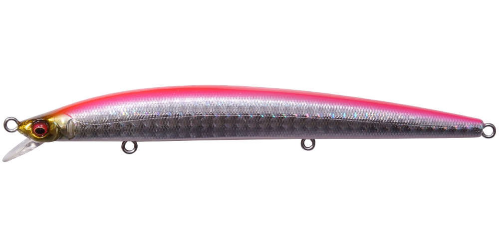
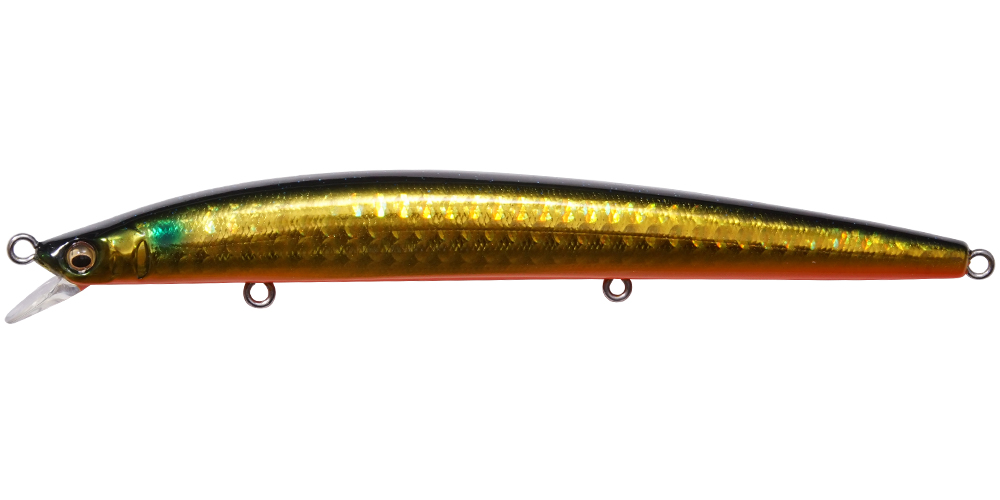
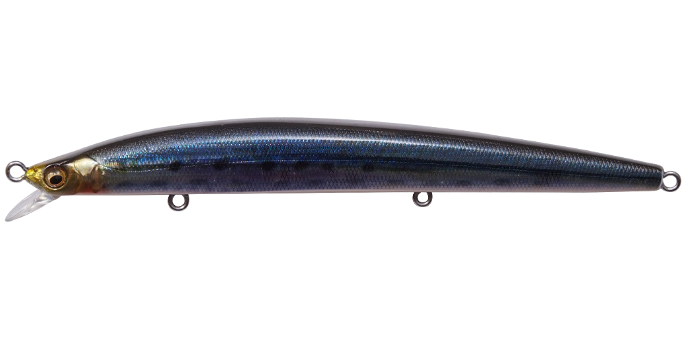
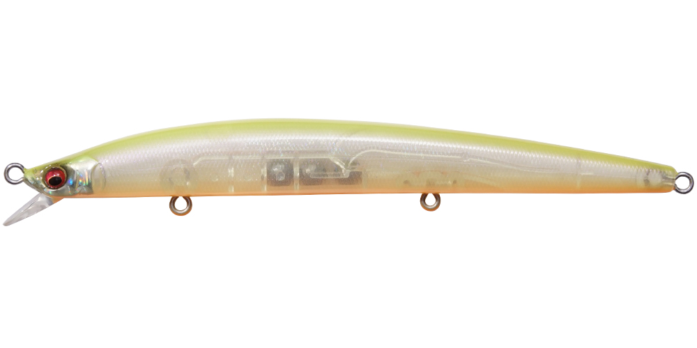

空海スリム120
（Cookai SLIM 120）
空海スリム120はMegabass（メガバス）のフローティングミノーです。
「スリムミノーの新たなる規範」をうたう、空海（Cookai）シリーズのスリムモデル。港湾・河口・サーフ・干潟など、ショアからのシーバスゲームに幅広く対応するハイレスポンスなスリムミノーです。

画像出典:メガバス公式HP
スペック
- メーカー
- Megabass（メガバス）
- タイプ
- フローティングミノー（スリムミノー）
- 全長
- 122mm
- 自重
- 12g
- フック
- #6×3
- 重心移動
- 3連重心移動（タングステンウエイト×2＋カーボンスチールボール）
- アクション
- タイトピッチ・ロール
- ターゲット
- シーバス
- 価格
- 1,980円（税別）
▼今すぐチェック
空海スリム120の特徴
細身で食わせ、重心移動で飛ばす、ハイレスポンスなスリムミノー
-
3連重心移動で逆風を突く飛距離
2つの高比重タングステンウエイトにカーボンスチールボールを加えた3連重心移動を搭載。荒天時の逆風・強風の中でも、同じサイズの従来のミノーを大きく上回る飛距離が出せます。
-
極限までスリムなボディ
ボディを極限まで細く突き詰め、リアルベイトのような極細の線光（フラッシング）を放ちます。食い渋っている大型のシーバスにも口を使わせやすいシルエットです。
-
極小チップビルで低速でも泳ぐ
抵抗を徹底的に減らした極小のチップビル（リップ）で、低水圧でもしなやかなタイトピッチ・ロールアクションを出します。ゆっくり巻いてもしっかり泳ぐのが強みです。
空海スリム120の使い方
遠投してから、スローからミディアムのただ巻きでロールさせるのが基本。巻き抵抗が小さいので、流れの変化を感じたらスピードを落として食わせの間を作ります。
河口や河川では、流れに乗せてドリフトさせる使い方も有効です。
空海スリム120の得意な状況
港湾・河口・サーフ・干潟と、ショアのシーバスゲーム全般。ベイトが細身のときや、アクションの強いミノーにスレた魚がいるとき、向かい風で普通のミノーでは飛距離が出ないときに出番が多いミノーです。
ワンポイント
もっと飛距離とボリュームが欲しいなら140mmの「空海スリム140」、少し深いレンジを引きたいなら「空海スリムMD」と、同じシリーズの中でサイズとレンジを使い分けられます。
空海スリムシリーズの使い分け
| モデル | タイプ | 使いどころ |
|---|---|---|
| 空海スリム120 | フローティング | ショアのシーバス全般。細身のベイトに |
| 空海スリム140 | フローティング | もっと飛距離とボリュームが欲しいときに |
| 空海スリムMD 120／140 | フローティング（ミッドダイバー） | 少し深いレンジを引きたいときに |
空海シリーズにはスリム以外にも、通常ボディの空海や「空海ブリング」などのモデルがあります。
人気カラー
全12色のラインナップから4色を紹介します（カラー名は公式の表記のまま）。

GG PINK BACK BAITピンクバックのベイトカラー。朝夕のマヅメ時や、少し濁りのある日に。

GG KINBORAゴールドベースのボラカラー。ボラがベイトのときや、濁り潮に。

FA NAMAIWASHIリアルなイワシカラー。澄み潮の日中や、イワシがベイトのときに。

SKELETON CHART Ⅱクリア系のチャート。スレた魚にシルエットを抑えて見せたいときに。
画像出典:メガバス公式HP
空海スリム120に似ているルアー
-
 ドーバー120F リーヴァ
アピア
詳細はこちら＞
ドーバー120F リーヴァ
アピア
詳細はこちら＞
120mm・18gのフローティングミノー。同じクラスで、もう少し強い波動のウォブンロールを出したいときに。
-
 ブローウィン125Fスリム
ブルーブルー
詳細はこちら＞
ブローウィン125Fスリム
ブルーブルー
詳細はこちら＞
125mm・14gの細身フローティングミノー。同じスリム系で、速巻きでテンポ良く探りたいときに。
-
 カゲロウ124F
メガバス
詳細はこちら＞
カゲロウ124F
メガバス
詳細はこちら＞
124mm・22gのシャローランナー。同じメガバスで、もっと浅いレンジと飛距離が欲しいときに。